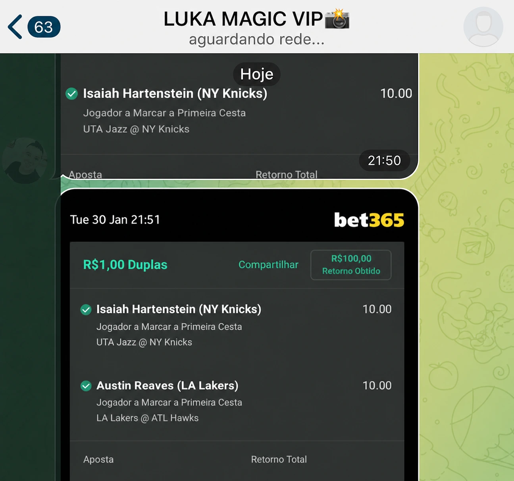
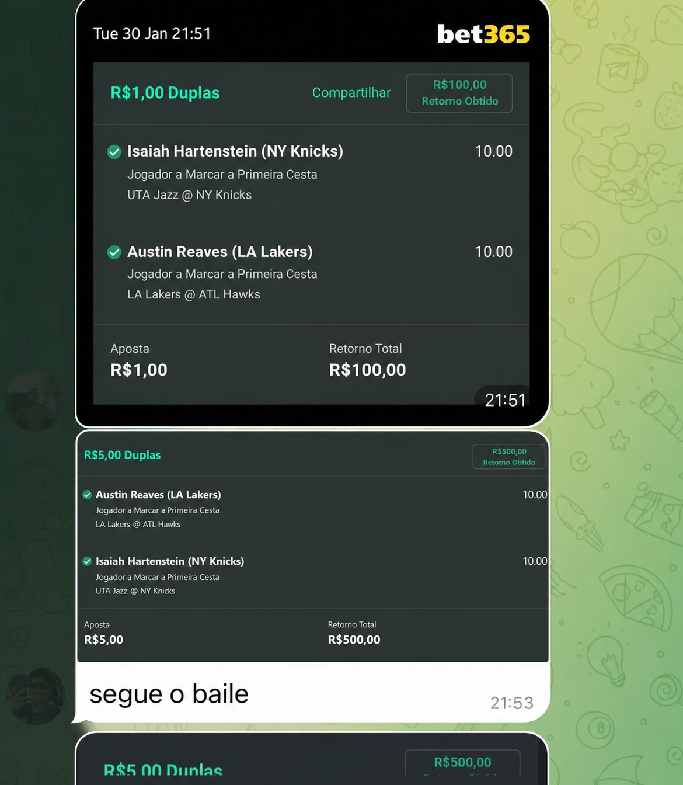
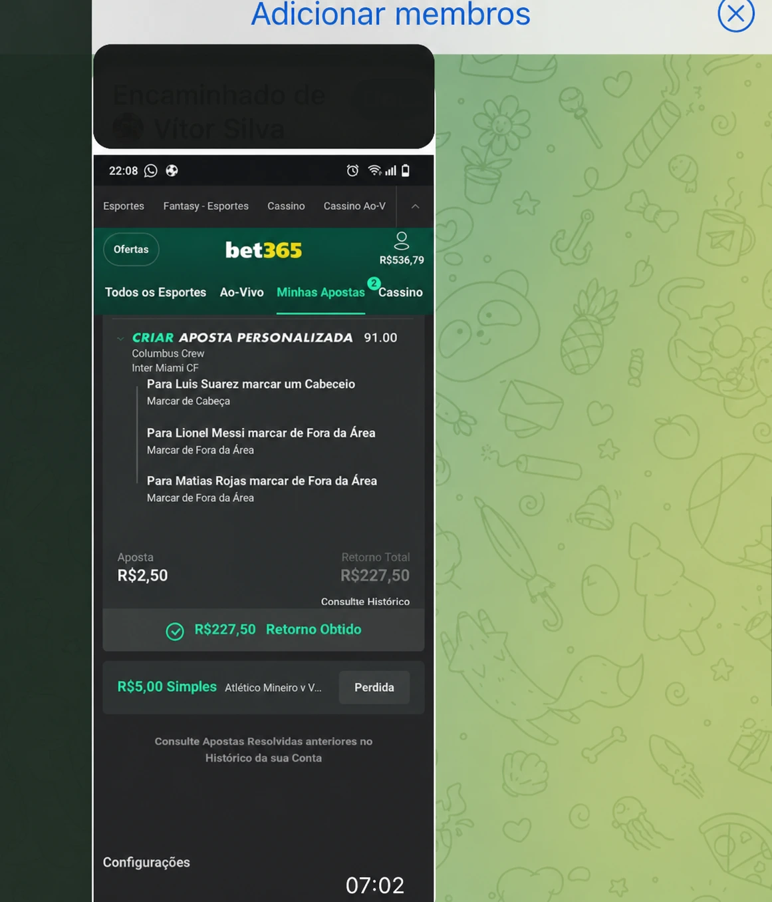

Análises diárias
Estatísticas, histórico de confrontos e leitura de jogo aplicados a cada entrada enviada no grupo. Você recebe o raciocínio por trás de cada análise, não só o palpite.
Acompanhe análises estatísticas diárias de futebol, NBA, tênis e outros esportes, feitas por uma equipe que estuda os jogos a fundo. Sem promessa de ganho garantido.
Ministério da Fazenda adverte: Aposta não é investimento — Proibido para menores de 18 anos.
Estatísticas, histórico de confrontos e leitura de jogo aplicados a cada entrada enviada no grupo. Você recebe o raciocínio por trás de cada análise, não só o palpite.
Grupos organizados por esporte no Telegram, para acompanhar de perto o que está sendo analisado no dia.
Materiais e explicações sobre como interpretamos odds, estatísticas e gestão de banca — para você entender o método, não para prometer que vai ganhar.
O que chega no grupo e o que acontece depois, sem cortar a parte que não interessa.

Análise enviada 01Entrada registrada no grupo com mercado e odd para acompanhar o processo, não só o placar.

Green confirmado 02O bilhete aparece no mesmo contexto em que foi compartilhado.

Green + red 03Transparência é mostrar a sequência inteira, inclusive quando não bate.
18+ Resultados passados não garantem resultados futuros. Aposte apenas o que pode perder.
No grupo fechado, a análise chega antes de a bola rolar — com mercado, odd, stake e o raciocínio completo por trás de cada entrada.
Quero fazer parteMembros do VIP falando de método, gestão e transparência — não de promessa de lucro.
O que me segurou no grupo foi a gestão. Cada entrada vem com stake em unidades — parei de apostar no impulso.
Já tinha entrado em outros grupos e só recebia bilhete seco. Aqui chega a tese completa — dá pra aprender junto com a entrada.
Mostram green e red no mesmo histórico. Parece pouco, mas nenhum grupo que eu conhecia fazia isso.
O grupo de escanteios virou meu mercado principal. A leitura chega horas antes de a bola rolar.
Comecei com banca baixa e a stake em unidades fez tudo fazer sentido. Método, não torcida.
O grupo de NBA é outro nível: minutos, lesão, rotação. A análise chega antes de as casas ajustarem as linhas.
O que vale é a consistência: todo dia tem análise registrada em unidades. Ninguém some depois de um red.
As aulas de gestão de banca sozinhas já valeram o plano. Mudei completamente a forma de apostar.
Resultados individuais variam. Depoimentos não são garantia de resultado futuro.
Acompanhamento e análise de estratégias para jogos de loteria, com risco claramente identificado.
Método Luka — Como organizamos as análises: leitura de estatísticas, gestão de banca e critérios usados para entrar ou não em uma aposta.
E-books explicativos sobre a lógica de cada grupo/esporte.
 Lucas “Luka Magic”
Lucas “Luka Magic”
Lucas Zailo jogou futebol e basquete na base antes de se dedicar à análise esportiva. Há 7 anos estuda odds e estatísticas de futebol, UFC e NBA, e hoje lidera a equipe de análise do Luka Magic.
No grupo, você recebe essa leitura pronta, com stake e gestão junto. Sem papo de ficar rico: método aplicado todo dia, registrado em unidades, na transparência do green e do red.
Todos os planos incluem análises completas com tese, stake em unidades e suporte oficial no Telegram.
Grupos com número de membros limitado, para manter a qualidade do acompanhamento.
Escolhe um mercado — futebol, cartões ou escanteios — e acompanha a fundo.
Análises diárias, sem promessa de resultado.
Só basquete: player props, minutos, lesões e contexto de temporada.
Análises diárias, sem promessa de resultado.
Todos os grupos de futebol, cartões, escanteios e loterias, com aulas.
exceto NBA
Análises diárias, sem promessa de resultado.
O acesso completo pela temporada inteira, com o menor custo mensal.
ou 12× de R$50
Análises diárias, sem promessa de resultado.
18+ Ministério da Fazenda adverte: Aposta não é investimento — Proibido para menores de 18 anos.
Pagamento em checkout externo seguro. Acesso liberado pelo suporte oficial após confirmação. Cancela quando quiser.
O que você precisa saber antes de entrar — respondido direto.
Não — e foge de quem garante. Aposta envolve risco e variância. O que o VIP entrega é análise com critério, stake controlada e registro transparente, pra você decidir com informação.
Não prometemos ganho garantido — nenhum grupo sério pode prometer isso, porque apostas esportivas envolvem risco real de perda. O que oferecemos é transparência: você vê a análise por trás de cada entrada e o histórico completo de resultados, positivos e negativos. O histórico em unidades é público e atualizado, e resultados passados não garantem resultados futuros.
Não prometemos deixar ninguém rico. Trabalhamos com análise fundamentada — nossa equipe tem vivência prática em futebol e basquete e aplica isso na leitura dos jogos. O foco é qualidade e consistência da análise, não promessa de resultado.
Fazemos parte da orientação sobre gestão de banca adequada ao valor que você tem disponível. Mas é importante: só aposte o que você pode perder. Apostas esportivas envolvem risco, e resultado nenhum é garantido — nem para bancas altas, nem para bancas baixas.
Pode. O plano mensal não tem fidelidade — cancelando, o acesso vale até o fim do período já pago.
Escolhe o plano, confirma o pagamento e recebe o acesso pelo suporte oficial em minutos.